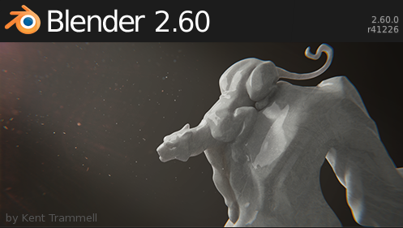

¿Qué hace Blender?

Splash de la versión 2.60 // Autor: Kent Trammell // Licencia: CC-BY-SA-3.0 (Cretive Commons)
La pregunta está cargada de veneno porque la lista de sus capacidades es interminable. En el ámbito del diseño 3D la cuestión realmente interesante es ¿qué no hace Blender?
Vamos a recorrer sus características aunque aparezca algo de terminología imposible de comprender para el recién llegado; sin embargo nos sirve como pequeña introducción al vocabulario propio de diseño 3D.
- Blender es un software destinado, en primera instancia, al modelado 3D de objetos para después hacer representaciones de ese modelado. Incorpora la posibilidad de dar texturas y materiales, iluminar la escena... Incluye las tecnologías más utilizadas en el diseño 3D: mallas, textos, meta-objetos, curvas, superficies y modelado escultórico.
- Permite crear animaciones de los modelados; desde mecánicas restringidas de artilugios robóticos hasta emisiones de partículas para explosiones, pasando por todo tipo de cinemáticas para mover personajes. No puede dejarse de mencionar que incorpora la tecnología necesaria para animar fluidos, gases, telas, cuerpos blandos, pelo...
- Incluye su propio motor de juegos para desarrollar paseos virtuales por recorridos arquitectónicos aunque en realidad es posible afrontar cualquier videojuego que un equipo humano cualificado se proponga. Además brinda muchas posibilidades en la simulación de físicas.
- Para el montaje final de una película cuenta con su propio editor de vídeo.
- Incorpora la potente tecnología de edición de nodos que permite disponer de cada uno de los efectos por separado y no en un orden secuencial (tipo historial) donde al anular uno de ellos desaparecerían todos los posteriores.
- Se puede extender hasta el infinito con la programación en Python si se tienen los conocimientos necesarios. Al tratarse de un software de fuentes abiertas no hay límite conocido. Cualquier script puede ser añadido para funciones concretas; incluso el conjunto del programa puede alterarse y adaptarse a las necesidades de un usuario o empresa.
Pero todo este lenguaje técnico no tiene mucho sentido a estas alturas. Dejemos entonces que Blender hable y se explique por sí solo; accedamos a internet, usemos un buscador y visualicemos, por ejemplo, la Demo Reel (vídeo de presentación de capacidades) con la que se presentó en Siggraph 2011 (www.youtu.be/QbzE8jOO7_0)
También es conveniente pasar por la web oficial a ver su catálogo de modelados espectaculares (www.blender.org/features-gallery/gallery/art-gallery)